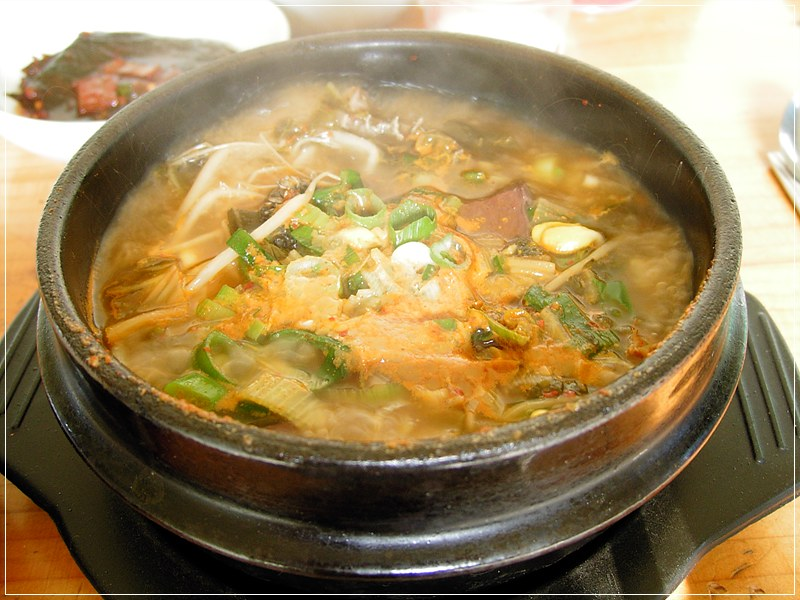

Home
Haejang-guk

Haejang-guk(해장국) or hangover soup refers to every kind of guk or soup eaten as a hangover cure in Korean cuisine.
Today I’m going to introduce you to ppyeo-haejangguk, or ox bone hangover soup. This soup is made from boiling ox bones for hours and hours until all the delicious, nutritious meat, marrow, and ligaments dissolve and create a hearty bone broth. The resulting soup is rich, savory, earthy, and best of all, after one spoonful I can feel my lips stick together from the collagen. I think: “Wow this is good for my body,” which makes me enjoy it even more. That means it’s well made!
Ingredients
- 2 pounds of Sliced Ox Bones
- 2 pounds of Napa Cabbage
- 6 quarts of Water
- 1/4 cup Doenjang
- 8 Garlic Cloves, minced
- 2 Green Chili Peppers, chopped
- 1 tablespoon Fish Sauce
- 2 Green Onions, chopped
- Gochugaru (optional)
Instructions
- Make Bone Broth
- Wash and rinse the bones in cold water to remove any bone fragments. Soak them in cold water to remove any blood.
- Boil 6 quarts of water in a heavy pot over high heat. When the water boils vigorously, drain the bones and add them to the boiling water.
- Cover and lower the heat to medium and let it boil for 4 hours. Check the amount of broth. If it gets below 6 cups, add more cold water. Boil longer until the broth is nice and milky and you still have at least 6 cups of broth.
- Remove from the heat. Strain the bones to separate from the broth.
- Let the bones cool down until you can handle them, and remove any ligaments or bits of meat left on them. Keep the bits in a bowl.
- Let the broth cool down. Keep it in the fridge for several hours or overnight until it solidifies. If you can’t wait that long, you can fill a large bowl with ice and cold water, and set your bowl of broth on top of it. Change the water and ice one time. Your broth will end up cool and wobbly.
- You’ll see a layer of brownish yellow fat has solidified on the surface, skim it off with a spoon.
- Make Haejangguk
- Bring a large pot of water to a boil and blanch the cabbage for 5 minutes. Strain and rinse in cold water a couple of times to remove any dirt left. Strain the cabbage and chop up into small pieces.
- Combine the cabbage, doenjang, garlic, green chili pepper, and fish sauce in a bowl and mix it well by hand or a wooden spoon.
- Put the cabbage mix to a large pot with 6 cups of bone broth along with the leftover bits of ligament and meat. Cover and cook for 20 minutes over medium high heat.
- Turn down the heat to low and cook for another 10 minutes.
- Serve
- Ladle the soup into bowls. Sprinkle chopped onion over top.
- Serve with rice, kimchi, gochu-garu, and a few more side dishes if you want.